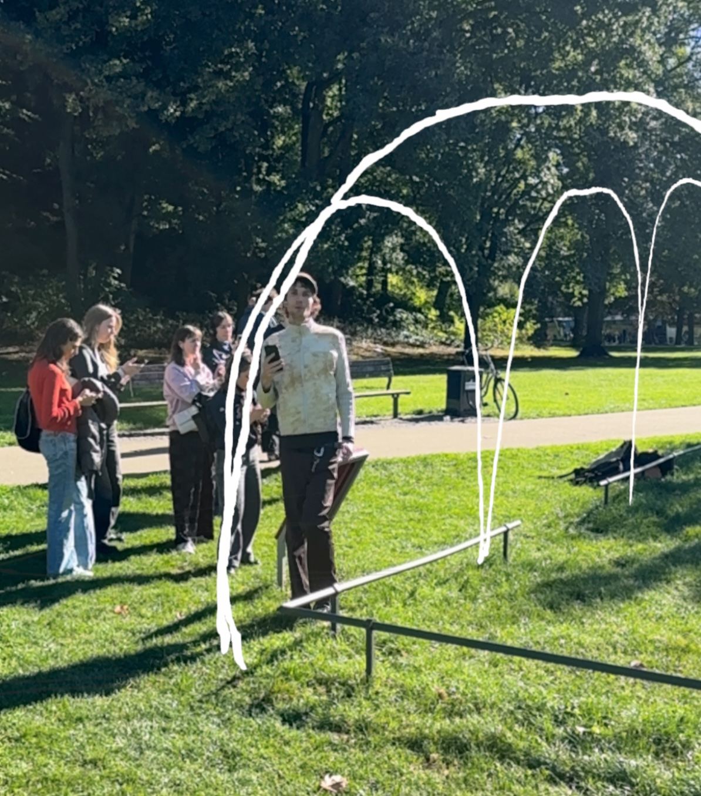

Exkursion

Die Exkursion war toll! Wir haben viele spannende Orte besucht und interessante Dinge gelernt. Besonders beeindruckend war die Führung durch die historische Altstadt, wo uns der Guide viele Geschichten und Fakten erzählt hat. Auch der Besuch im Museum war sehr lehrreich, da wir dort viele Exponate aus verschiedenen Epochen sehen konnten. Insgesamt war es eine tolle Erfahrung, die ich jedem nur empfehlen kann!